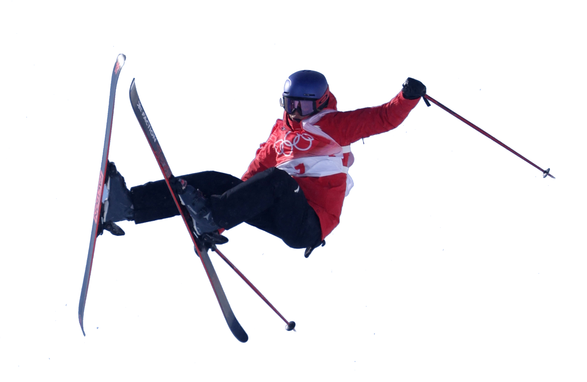
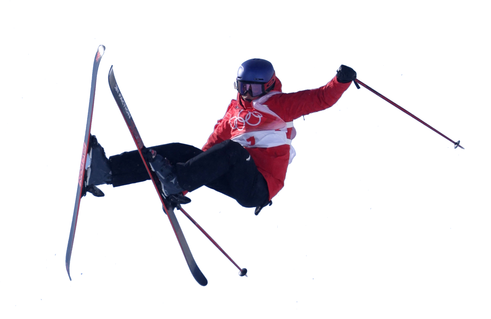

Serre Chevalier
Serre Chevalier is a major ski resort in Southeastern France, near the Italian border, located in the Hautes-Alpes department, Provence-Alpes-Côte d'Azur region. Situated to the northeast of Écrins National Park in the French Alps, the resort encompasses a large skiing area, with 250 km (155 mi) of slopes and favourable weather, boasting 300 days of sunshine a year. In Serre Chevalier, 80 km (50 mi) of the slopes are covered by snow cannons to supplement natural snowfall. The resort is owned by Compagnie des Alpes. Serre Chevalier consists of the city of Briançon, the villages of Chantemerle in Saint-Chaffrey and Villeneuve in La Salle-les-Alpes, as well as Le Monêtier-les-Bains. World Cup champion ski racer Luc Alphand was born and lives in the valley below the resort.
Ski area
The maximum elevation for skiing is at Telesiege Yret at 2,800 m (9,190 ft) above sea level, and the minimum is 1,200 m (3,940 ft), a total vertical drop of 1,600 m (5,250 ft). One of the outstanding features of Serre Chevalier is the wooded nature of the slopes. The timber line is at 2,150 m (7,050 ft), yielding about 700 m (2,300 ft) of vertical drop of tree-lined slopes. The slopes are managed by Compagnie des Alpes. There are 61 lifts: 1 cable car, 5 gondola lifts, 20 chairlifts in total, 10 high-speed detachable chairlifts, 10 fixed-grip chairlifts, 28 surface lifts, 3 ski tows, as well as 4 magic carpet lifts
Summer
In the summer Serre Chevalier is enjoyed for hiking, cycling, mountain biking, climbing, rock climbing, sledding, kayaking, paragliding and sightseeing. Four lifts are open to take hikers and mountain bikers up the mountain. There are 10 trails between 2500 and 1350m. Serre Chevalier organised the MTB French championships in 2008, the MTB Trial French championships in 2009 and the BMX European games in 2010. The location was also used in the 2011 Tour de France when Stage 18 finished at the summit of the nearby Col du Galibier. Luxembourg climbing specialist Andy Schleck won the stage with a long solo breakaway 60 km (37 mi) from the finish and finished the Tour second overall, losing to Australian cyclist Cadel Evans.